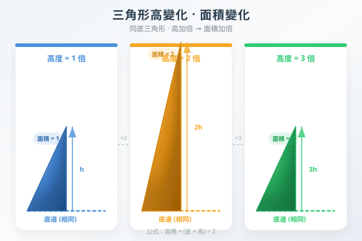
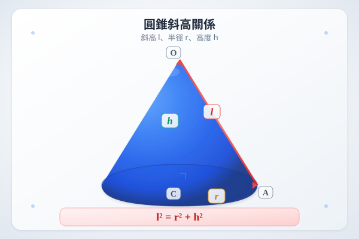

| # | 題目 | 答案 | 類型 |
|---|---|---|---|
| 1 | 平行四邊形底 9 cm，高 6 cm。面積 = ？ | ___ | manual |
| 2 | 三角形底 12 cm，高 5 cm。面積 = ？ | 30 cm² | auto |
| 3 | 梯形上底 5 cm，下底 9 cm，高 4 cm。面積 = ？ | ___ | manual |
| 4 | 長方形長 11 cm，闊 6 cm。它的面積 = ？周界 = ？（注意：面積和周界要分開寫！） | 66 cm² | auto |
| 5 | 正方形邊長 7 cm。面積 = ？（有人答 28 cm²— 錯在哪？） | 49 cm² | auto |
| 6 | 平行四邊形底 10 cm，高 5 cm。面積 = ？ | ___ | manual |
| 7 | 三角形底 14 cm，高 6 cm。面積 = ？ | 42 cm² | auto |
| 8 | 梯形上底 6 cm，下底 12 cm，高 5 cm。面積 = ？ | ___ | manual |
| 9 | 正方形邊長 9 cm。分別寫出它的周界和面積。哪個有²？ | 81 cm² | auto |
| 10 | 長方形長 9 cm，闊 5 cm。面積 = ？周界 = ？ | 45 cm² | auto |
| 11 | 梯形：上底 5 cm，下底 9 cm，斜邊 8 cm，高 4 cm。面積 = ？ （哪個數據不需要？） | ___ | manual |
| 12 | 三角形面積 36 cm²，底 9 cm。高 = ？（反求：高 = 面積×2÷底） | ___ | manual |
| 13 | 一個長方形長 3 m，闊 2 m。面積 = ？cm²（陷阱：單位換算！3m=300cm, 2m=200cm） | 6 cm² | auto |
| 14 | 正方形周界 36 cm。它的面積 = ？（不能直接代 36！先求邊長） | ___ | manual |
| 15 | L形組合圖形：可分成兩個長方形 A（10×4 cm）和 B（6×5 cm）。總面積 = ？ | 40 | auto |
| 16 | h=5底=12斜邊=8(不是高!)平行四邊形底 12 cm，相鄰斜邊 8 cm，高 5 cm。面積 = ？周界 = ？ （面積用底×高；周界用(底+斜邊)×2— | ___ | manual |
| 17 | 梯形上底 6 cm，下底 10 cm，高 5 cm。一個平行四邊形的底等於梯形上底+下底，高與梯形相同。平行四邊形面積是梯形面積的幾倍？ （平行四邊形=16×5 | 2.50 | auto |
| 18 | 三角形底 8 cm，高 6 cm。若底不變、高增加 2 cm，新面積比原面積多多少？ （原=24, 新=8×8÷2=32, 多8 cm²） | 4 | auto |
| 19 | 梯形面積 72 cm²，高 8 cm。上底是下底的 1/2。上底和下底各是多少？ （上底+下底=72×2÷8=18, 設下底=x 上底=0.5x → 1.5x= | 0.50 | auto |
| 20 | 一個平行四邊形用 28 cm 鐵線圍成（每邊長度均為整數 cm，鄰邊不相等）。面積最大可能是多少？ （周界=28→底+斜邊=14，面積=底×高，需考慮不同底高的 | ___ | manual |
| 21 | 三角形花圃底 12 m，高 8 m。面積 = ？m² | 48 cm² | auto |
| 22 | 梯形田地上底 15 m，下底 25 m，高 10 m。面積 = ？m² | ___ | manual |
| 23 | 一幅平行四邊形牆壁底 6 m，相鄰邊 5 m，高 4 m。要髹油漆，每 m² 用 0.25 L。共需多少升？（5m是斜邊—多餘資訊！面積=6×4=24 m²） | 24 | auto |
| 24 | 正方形花圃周界 48 m。每 m² 種 5 棵花，共可種多少棵？（先求邊長=48÷4=12, 面積=144 m²） | 12 | auto |
| 25 | 一個 L 形公園分成：長方形 A（20 m × 15 m）和長方形 B（12 m × 8 m）。公園總面積 = ？m² | ___ | manual |
| 26 | 梯形停車場上底 30 m，下底 50 m，高 20 m。每輛車佔地 25 m²，最多可停多少輛？ | ___ | manual |
| 27 | 一個三角形和一個平行四邊形底相同、高相同。三角形面積 25 m²。平行四邊形面積 = ？ | ___ | manual |
| 28 | h=1.5m底=2m一幅組合壁畫：三角形部分（底 2 m 高 1.5 m）下方接長方形（2 m × 3 m）。總面積 = ？m² | 1.5 cm² | auto |
| 🏔️1 | h=8b₂b₁梯形面積 144 cm²，高 8 cm。上底是下底的 3 倍。上底和下底各是多少？ （上底+下底=144×2÷8=36, 設下底=x 上底=3x | 0.25 | auto |
| 🏔️2 | 一個多邊形可分成：三角形（底 8 cm 高 5 cm）+ 長方形（8 cm × 6 cm）+ 梯形（上底 4 cm 下底 8 cm 高 3 cm）。總面積 = | 16 cm² | auto |
| 🏔️3 | 正方形邊長增加 3 cm 後，新正方形比原正方形面積多 57 cm²。原正方形的邊長 = ？ （設原邊長=x → (x+3)²−x²=57 → x²+6x+9− | ___ | manual |
| H1 | 平行四邊形底 11 cm，高 6 cm。面積 = ？ | ___ | manual |
| H2 | 三角形底 16 cm，高 5 cm。面積 = ？ | 40 cm² | auto |
| H3 | 梯形上底 7 cm，下底 15 cm，高 6 cm。面積 = ？ | ___ | manual |
| H4 | 正方形周界 28 cm。面積 = ？（不能直接代28！先求邊長=28÷4=7） | 7 | auto |
| H5 | 長方形長 4 m，闊 250 cm。面積 = ？m²（250 cm = 2.5 m） | 1000 cm² | auto |
| H6 | 梯形面積 84 cm²，高 7 cm，下底是上底的 2 倍。上底和下底各是多少？ | ___ | manual |
| H7 | 一個三角形和一個平行四邊形等高。三角形底 10 cm，平行四邊形底 5 cm。三角形面積是平行四邊形的幾倍？ | ___ | manual |
| H8 | 一個長方形，長是闊的 2 倍。若周界是 36 cm，面積 = ？ | ___ | manual |
霖楓學苑 · LF Academy · 自動答案生成器 v1.0 · 手動題目請老師覆核